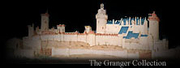

Q. How can we protect ourselves and our cities?
Many preventive measures were tried, including:
- Quarantine. In Milan, the
archbishop ordered victims' homes walled up, with all occupants inside,
sick or well.
|

- Escape. "Men and women abandoned
their houses and kin and fled abroad or to the country, as if God's
punishment would not pursue them," wrote Giovanni Boccaccio of Florence.
|
- Prayer. Pope Clement authorized
processions in which thousands walked and prayed for days. However,
he ended them when it became clear that they simply spread disease.
|
- Cult rituals. Jean Froissart
wrote of German penitents who-despite the disapproval of religious authorities-went
from town to town, "scourging themselves with whips of knotted leather
with iron spikes, to entreat God to stop the mortality."
|
- Slaughter of Jews. Froissart
wrote, "At that time the Jews were taken and burnt everywhere throughout
the world, except in the domains beneath the protection of the Pope."
|